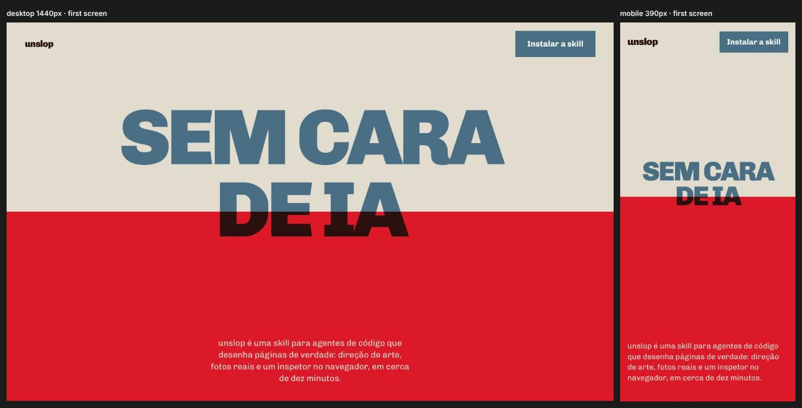
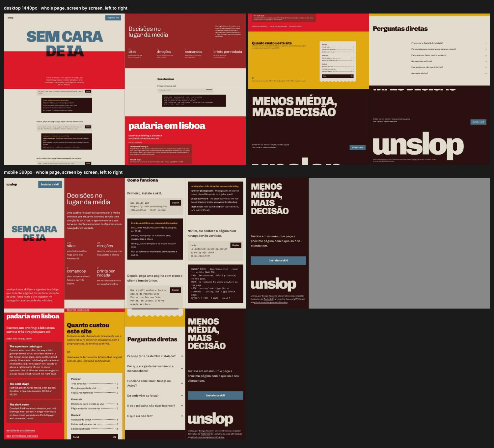
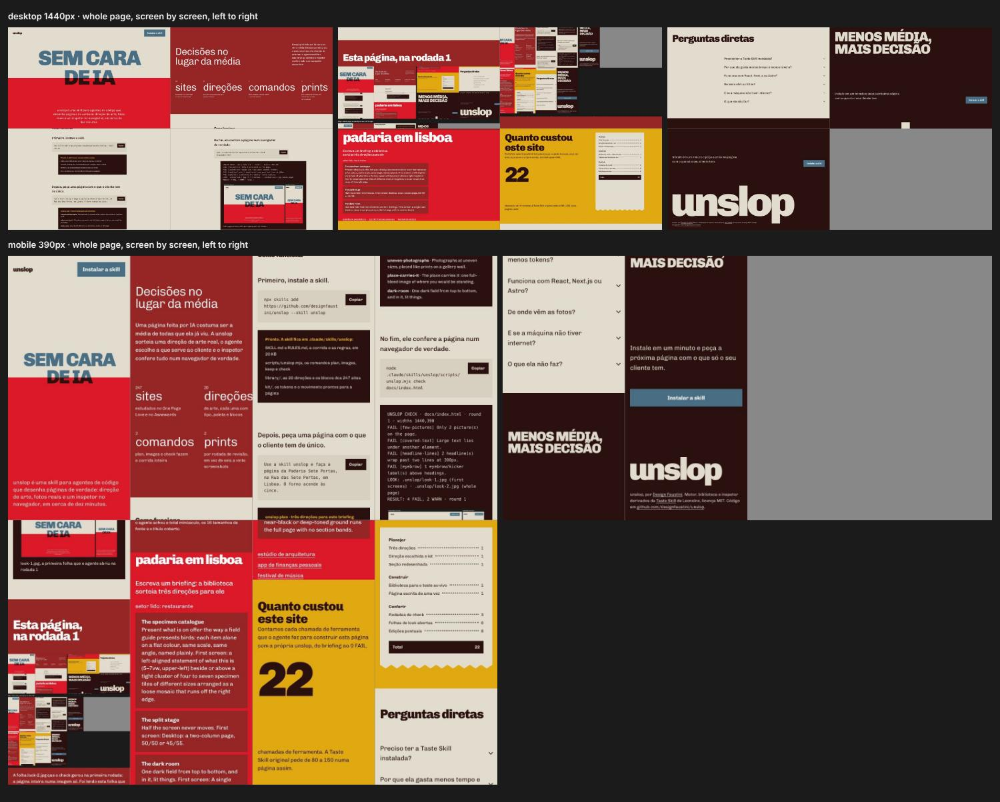

Sem cara
de IA
unslop é uma skill para agentes de código que desenha páginas de verdade: direção de arte, fotos reais e um inspetor no navegador, em cerca de dez minutos.
Decisões no lugar da média
Uma página feita por IA costuma ser a média de todas que ela já viu. A unslop sorteia uma direção de arte real, o agente escolhe a que serve ao cliente e o inspetor confere tudo num navegador de verdade.
- 247 sitesestudados no One Page Love e no Awwwards
- 20 direçõesde arte, cada uma com tipo, paleta e blocos
- 3 comandosplan, images e check fazem a corrida inteira
- 2 printspor rodada de revisão, em vez de seis a vinte screenshots
Como funciona
Primeiro, instale a skill.
npx skills add https://github.com/designfaustini/unslop --skill unslopPronto. A skill fica em .claude/skills/unslop:
- SKILL.md e RULES.md, a corrida e as regras, em 20 KB
- scripts/unslop.mjs, os comandos plan, images, keep e check
- library/, as 20 direções e os blocos dos 247 sites
- kit/, os tokens e o movimento prontos para a página
Depois, peça uma página com o que o cliente tem de único.
Use a skill unslop e faça a página da Padaria Sete Portas, na Rua das Sete Portas, em Lisboa. O forno acende às cinco.unslop plan · três direções para este briefing
- uneven-photographs · Photographs at uneven sizes, placed like prints on a gallery wall.
- place-carries-it · The place carries it: one full-bleed image of where you would be standing.
- dark-room · One dark field from top to bottom, and in it, lit things.
No fim, ele confere a página num navegador de verdade.
node .claude/skills/unslop/scripts/unslop.mjs check docs/index.htmlUNSLOP CHECK · docs/index.html · round 1 · widths 1440,390
FAIL [few-pictures] Only 2 picture(s) on the page.
FAIL [covered-text] Large text lies under another element.
FAIL [headline-lines] 2 headline(s) wrap past two lines at 390px.
FAIL [eyebrow] 1 eyebrow/kicker label(s) above headings.
LOOK: .unslop/look-1.jpg (first screens) · .unslop/look-2.jpg (whole page)
RESULT: 4 FAIL, 2 WARN · round 1
Esta página, rodada 1 e rodada 2


Escreva um briefing: a biblioteca sorteia três direções para ele
- The name as a monumentThe name is the headline.
- The place carries itFor a place, the photograph is the argument.
- The page is the objectFind the printed or physical artefact that already exists in the subject's world and build the page as that thing.
Quanto custou este site
Contamos cada chamada de ferramenta que o agente fez para construir esta página com a própria unslop, do briefing ao 0 FAIL.
20
chamadas de ferramenta em 9 minutos, com quatro rodadas de check. A Taste Skill original leva de 30 a 45 minutos por página, segundo o próprio README.
Planejar
- Três direções
- 1
- Direção escolhida e kit
- 1
- Seção redesenhada
- 1
Construir
- Biblioteca para o teste ao vivo
- 1
- Página escrita de uma vez
- 1
- Ajuste antes do primeiro check
- 1
Conferir
- Rodadas de check
- 4
- Folhas de look abertas
- 6
- Lotes de edições pontuais
- 4
- Total
- 20
Perguntas diretas
Preciso ter a Taste Skill instalada?
Não. A unslop traz embutido o motor da Taste Skill de Leonxlnx (licença MIT, com crédito): a biblioteca dos 247 sites, o inspetor no navegador e a busca de imagens em acervos abertos.
Por que ela gasta menos tempo e menos tokens?
O agente lê 20 KB de instruções em vez de mais de 300 KB, abre uma folha de contato em vez de dezenas de fotos e screenshots, recebe tokens e movimento prontos, escreve a página uma vez e corrige com edições pontuais.
Funciona com React, Next.js ou Astro?
Sim. O plano e as regras valem para qualquer stack, e o check aceita um arquivo ou uma URL local, então basta apontar para o servidor de desenvolvimento.
De onde vêm as fotos?
De acervos abertos: Openverse, Wikimedia Commons, Art Institute of Chicago e o Met, só com licenças que permitem uso comercial. Cada foto baixada guarda título, autor e licença, e o crédito vai no rodapé.
E se a máquina não tiver internet?
A skill desenha em SVG o que não encontrou, numa linguagem só e nas cores da paleta, e avisa no relatório que os acervos não puderam ser consultados.
O que ela não faz?
Não inventa depoimentos, clientes, números ou logos. Não usa degradê, etiqueta acima do título, cards com ícone nem fonte monoespaçada fora de código. E não chama uma página de pronta sem abrir os prints.
Menos média,
mais decisão
Instale em um minuto e peça a próxima página com o que só o seu cliente tem.
Instalar a skill